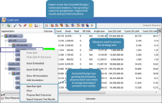

Assisted Design Project Tree editor
The Assisted Design Project Tree editor enables the user to create or modify a tree of the type selected when building the Assisted Design Project. Consequently, the layout of the editor depends upon the type of tree selected. However, there are several ways in which the Assisted Design Project Tree editor is unique: 
{kind=link}
By default, the Leaf Node ID, Leaf Node Name, and Component Type columns are hidden. The user can un-hide these by clicking on the Column Display button  .
.
The Assisted Design Project Tree editor toolbar helps the user define the Assisted Design Project
{kind=link}
The first seven buttons are the same for all tree editor tool bars:
 Test - launches Interactive Test for the tree within the Assisted Design Project.
Test - launches Interactive Test for the tree within the Assisted Design Project.
 Copy component image to clipboard - select to copy the complete tree, including the column headers contained in the editor, as an image to the clipboard from where you can paste this image into any appropriate application.
Copy component image to clipboard - select to copy the complete tree, including the column headers contained in the editor, as an image to the clipboard from where you can paste this image into any appropriate application.
| Selections made using the Column Display icon will not change (reduce) the number of columns included in the image created using the Copy component image to clipboard functionality. |
 Assign outcome - paints the outcome that the user has selected in the Outcome table to the chosen leaf node. The user can toggle different views from Outcome Display in the context menu.
Assign outcome - paints the outcome that the user has selected in the Outcome table to the chosen leaf node. The user can toggle different views from Outcome Display in the context menu.
 Clear outcome - removes the outcome colour from the selected leaf node and sets the outcome to <<Unassigned>>
Clear outcome - removes the outcome colour from the selected leaf node and sets the outcome to <<Unassigned>>
 Add bookmark - allows the user to bookmark specific split headers in the tree. When the contents of a tree is displayed in the Navigator window, the bookmarks are displayed separately. Clicking on a bookmark in the Navigator window will open the tree in the Segmentation Tree editor at that point in the tree, giving the user quick access to a specific split header in the tree.
Add bookmark - allows the user to bookmark specific split headers in the tree. When the contents of a tree is displayed in the Navigator window, the bookmarks are displayed separately. Clicking on a bookmark in the Navigator window will open the tree in the Segmentation Tree editor at that point in the tree, giving the user quick access to a specific split header in the tree.
 Add annotation - select to add annotation to any node of the tree. Once some annotation has been added, the user can choose to display it or hide all, edit, remove or show all annotations by using options selected from the right click menu accessed from any node.
Add annotation - select to add annotation to any node of the tree. Once some annotation has been added, the user can choose to display it or hide all, edit, remove or show all annotations by using options selected from the right click menu accessed from any node.
 Table View - select to display only the leaf nodes of the tree. This view has been designed to make it easier for the user to assign outcomes. (Tree growing operations are not permitted in this view)
Table View - select to display only the leaf nodes of the tree. This view has been designed to make it easier for the user to assign outcomes. (Tree growing operations are not permitted in this view)
The last eleven buttons are unique to the Assisted Design Project Tree editor tool bar:
Calculate Measures Against Tree Scenario - select to calculate the selected measures for the tree and display the results.
{kind=link}
Find Next Best Split for the selected node - select to perform Next Best Split analysis to identify and rank a set of predictor characteristics for the next level of the tree.
{kind=link}
Grow the tree from the selected node - select to allow Assisted Design to grow the tree one or more levels automatically.
{kind=link}
Propose the best outcomes to assign to the selected node(s) - select to perform Propose Best Outcomes for selected nodes of the tree.
{kind=link}
Export Scenario Test Results - select to test the tree scenario and export results for analysis and to display the results in the Output window
{kind=link}
Import an existing tree - select to import an existing tree from the system composition to replace the existing tree scenario in this Assisted Design Project.
{kind=link}
Save this scenario as new tree - select to save the tree in its current saved state as a tree component for shared use within the domain.
{kind=link}
Replace original tree with this scenario - select to replace the tree that was used as the basis for this Assisted Design Project with the tree in its current saved state.
{kind=link}
Merge with Original Tree - select to merge this tree branch in its current saved state with the tree that was used as the basis for this Assisted Design Project tree.
{kind=link}
Promote as Challenger in the original Decision Process Flow - select to promote this tree scenario as a challenger to the tree that was used as the basis for this Assisted Design Project, within the originator decision process flow.
{kind=link}
Enter measure comparison mode - select to compare measures between the primary data set and comparison data set.
{kind=link}
Measures can be used to assess the current strategy tree as well as to direct strategy design/tree growing. These measures are calculated and displayed in columns in the Assisted Design Project Tree editor. Project Characteristics are available in the Resources window to enable the user to create embedded measures as needed from within the editor. The Compare Measure feature allows the user to quickly compare measures between the primary analysis data set and the comparison data set.
Right clicking a leaf node displays two selections that enable the user to grow a tree automatically and perform a next best split analysis, as well as a selection that enables the user to define constraints and eligibility and propose the best outcomes to assign given the goal and these criteria. Finally, there is an export scenario test results option that enables users to export the test results for the entire tree scenario.
In addition, when the user right clicks on a split header of the tree, they get the additional Export to PMML option. See the Export to PMML help for more information.
Any assigned outcome component can be opened from within the Outcomes table by right clicking on the component and selecting Open.
It is possible to create and maintain Assisted Strategy Design projects based on multi-process trees (known as Decision Process Trees), as shown in the following example:
{kind=link}
All the functionality for an Assisted Design Project on a Decision Process Tree is the same as for all other component tree types, but there are some additional characteristics available in the Project Characteristics. See Using Project Characteristics to create measures for more information.